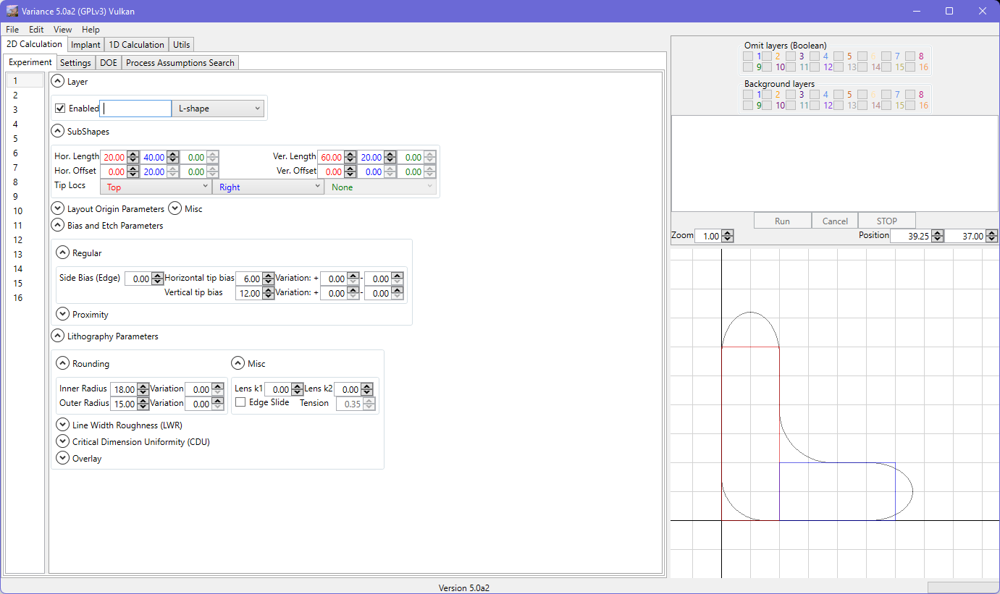
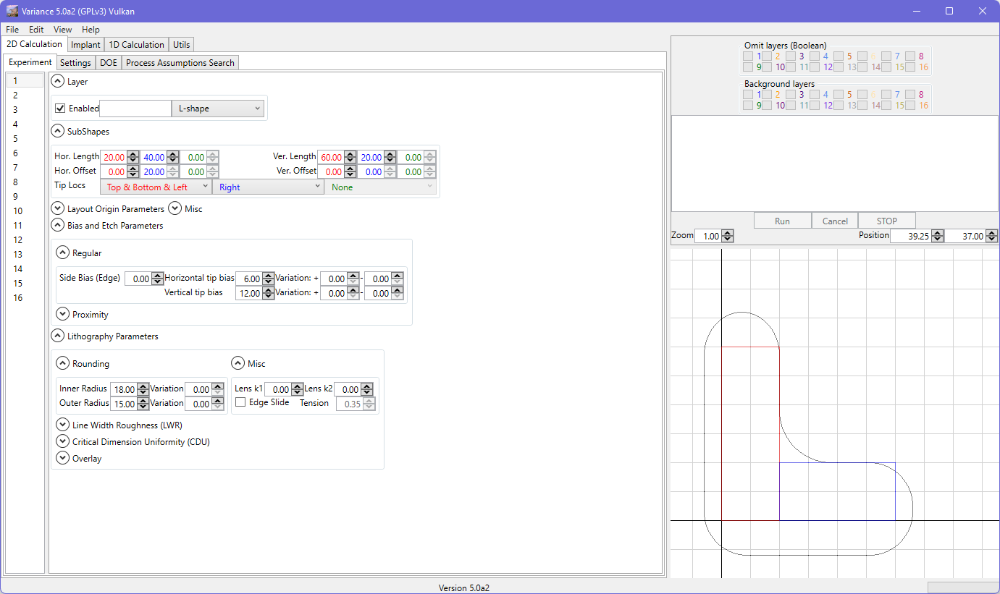

Tip Locations
For each sub-shape, you can define which locations are to be considered as tips. Vertical and horizontal tips can receive different biases and variations of those biases.
Note that you can choose any combination of edges that you like to define tips :
